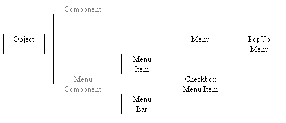
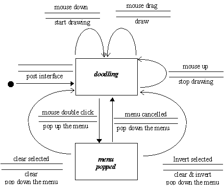
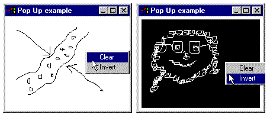

The AWT menu classes form a separate hierarchy from the Component hierarchy, used so far; its class hierarchy diagram is shown in Figure 2.17. This section will provide a brief introduction to implementing a popup menu; a more detailed introduction to menus in general will be given in Chapter 6.

Figure 2.17 The Java AWT MenuComponent class hierarchy.
The state transition diagram for this interface is given in Figure 2.18. It is based upon that for the CanvasExample given previously. A mouse down event will still cause drawing to start, but a double mouse click will post the popup menu offering the user two options, to clear the drawing or to invert the drawing colours. It is also possible that the user will unpost the menu by clicking with the mouse outside the extent of the popup menu.

Figure 2.18 Popup menu example, state transition diagram.
The appearance of this applet showing the popup menu in the default, black on white, and inverted, white on black, modes is shown in Figure 2.19.

Figure 2.19 Popup menu example in normal and inverted modes.
The popup menu is provided by an instance of the PopupMenu class upon which is mounted two instances of the MenuItem class, providing the two items labeled "Clear" and "Invert". When the MenuItem buttons are pressed an ActionEvent is generated which can be responded to by a registered ActionListener object. The Doodle class, as described above, is the basis of the PoppingDoodle class whose implementation, as far as the end of its constructor, is as follows.
0041 class PoppingDoodle extends Canvas
0042 implements ActionListener {
0043
0044 private int lastX;
0045 private int lastY;
0046 private Graphics context;
0047 private PopupMenu popup;
0048 private MenuItem clearItem;
0049 private MenuItem invertItem;
0050
0051 protected PoppingDoodle( int width, int height) {
0052 super();
0053 this.setSize( width, height);
0054 this. enableEvents( AWTEvent.MOUSE_MOTION_EVENT_MASK |
0055 AWTEvent.MOUSE_EVENT_MASK |
0056 AWTEvent.ACTION_EVENT_MASK );
0057
0058 popup = new PopupMenu();
0059 this.add( popup);
0060
0061 clearItem = new MenuItem( "Clear");
0062 clearItem.setActionCommand( "Clear");
0063 clearItem.addActionListener( this);
0064 popup.add( clearItem);
0065
0066 invertItem = new MenuItem( "Invert");
0067 invertItem.setActionCommand( "Invert");
0068 invertItem.addActionListener( this);
0069 popup.add( invertItem);
0070 } // End PoppingDoodle constructor.
This class is not declared with public visibility for the same reasons as explained for the Doodle class, above. The first part of the constructor, as far as the call of enableEvents() starting on line 0054 is identical to that of the Doodle class given above. The argument to enableEvents() differs only, on line by 0056, by enabling ActionEvents in order to allow instances of the PoppingDodle class to respond to such events generated by the MenuItems contained within it.
The remaining parts of the constructor are concerned with constructing the popup menu and commence, on lines 0058 and 0059, with the construction of a PopupMenu instance called popup and adding it to the PoppingDoodle instance being constructed. On lines 0061 to 0063 the first MenuItem instance, called clearItem, is first constructed with its label set to "Clear", has its actionCommand attribute set to "Clear", has its actionListener attribute set to the current instance (this) and is finally added to the PopupMenu popup. The constructor concludes, on lines 0066 to 0069, by adding the invertItem MenuItem to the popup menu, using the same techniques.
The processMouseEvent() method differs from that presented in the Doodle class as it now has to respond both to a single mouse press and a double mouse click. Its implementation, using the MouseEvent getClicksCounted() method, is as follows.
0098 protected void processMouseEvent( MouseEvent event) {
0099
0100 if ( event.getId() == MouseEvent.MOUSE_PRESSED) {
0101 if ( event.getClickCount() == 2) {
0102 popup.show( this.getParent(), event.getX(), event.getY());
0103 } else {
0104 lastX = event.getX();
0105 lastY = event.getY();
0106 } // End if.
0107 } // End if.
0108 } // End processMouseEvent.
Within the guard, on line 0100, which ensures that the method only responds to mouse pressing events, on line 0101 the MouseEvent getClickCount() method is use to determine if a double mouse click occurred. If so, line 0102, pops-up the popup menu by calling its show() method passing as arguments the Component which it is to popup from and the location where it is to popup. Otherwise the steps taken for a single click, on lines 0104 and 0105, are the same as in the Doodle class.
The processMouseMotion() method and the addNotify() method do not differ from those of the Doodle class but a new method, actionPerformed(), has to be supplied in order for this class to conform to the ActionListener interface, as stated on line 0042. This method will be called whenever one of the MenuItems on the popup menu is activated and is implemented as follows.
0080 public void actionPerformed( ActionEvent event) {
0081
0082 String command = new String( event.getActionCommand());
0083 Color hold;
0084
0085 if ( command.equals( "Clear")) {
0086 this.repaint();
0087 } else if ( command.equals( "Invert")) {
0088 hold = this.getBackground();
0089 this.setBackground( this.getForeground());
0090 this.setForeground( hold);
0091 context.setColor( hold);
0092 this.repaint();
0093 } // End if.
0094 } // End actionPerformed.
On line 0082 the actionCommand String is extracted from the event instance passed as an argument to the method and used on line 0085 to decide if the Clear menu item was pressed. If so then the repaint() method of the PoppingDoodle instance (this) is called which will clear its window. Otherwise, on line 0087 the actionCommand is tested to see if it indicates that the Invert button was pressed and, if so, on lines 0088 to 0090 the Colors stored in the PoppingDoodle's foreground and background attributes are swapped. Following this line 0091 installs the new foreground Color into the Graphics context before repaint() is called. The effect of these steps is to invert the colours so, assuming that it is currently drawing in black on a white background, it will clear the window to a solid black background and prepare for drawing in white. Or vice versa if it is already been inverted and is drawing in white on a black background.
Design Advice
A Popup menu can save on screen space but gives no obvious clue of its existence. So it is difficult for a user to discover and is only suitable for experienced users.